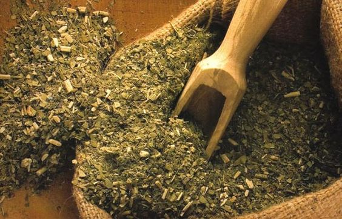
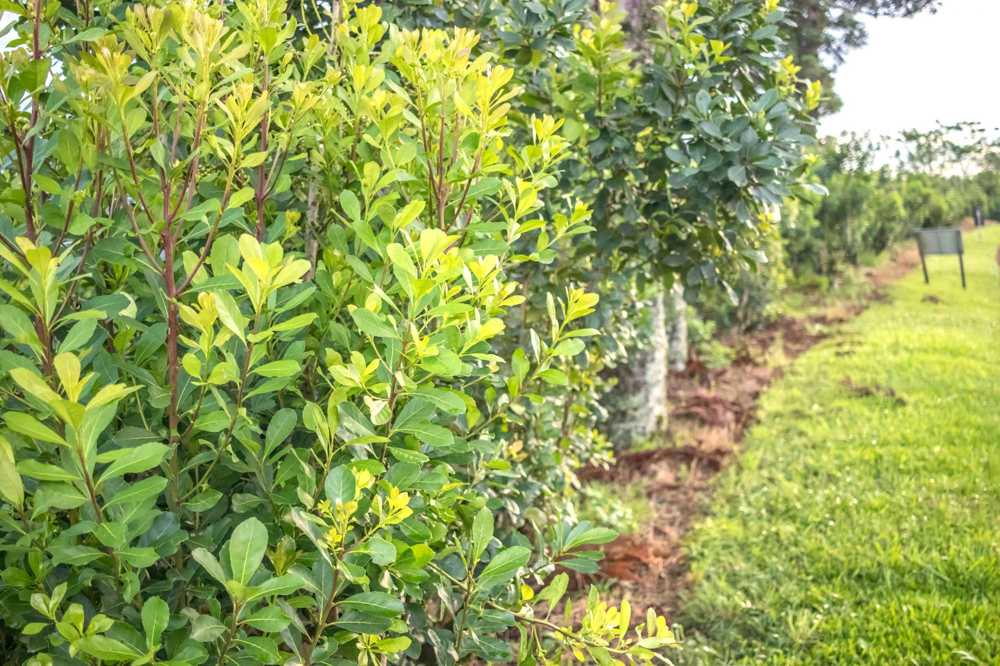

Una breve historia de la yerba mate
Con todo, cuando los colonos europeos llegaron a Paraguay a mediados de los años 1600, el consumo de yerba mate se prohibió en un principio, más que todo porque los poderes coloniales europeos consideraban que la planta era adictiva.
En los años siguientes, los colonos europeos revirtieron la prohibición del consumo y obligaron a los esclavos nativos a aumentar la producción. La primera ruta comercial de la yerba mate fue establecida en 1645 y permitió la exportación de hojas y tallos secos a países europeos.

Se cree que la planta Ilex paraguariensis fue descubierta inicialmente por los indígenas guaraníes que vivían en lo que hoy se conoce como Paraguay. Durante siglos, la yerba mate fue consumida por tribus indígenas por motivos culturales y espirituales, así como por sus presuntos efectos medicinales.
Al parecer, los guaraníes primero masticaban las hojas y tallos de la planta pero después empezaron a remojarlos en agua para crear una bebida parecida al té. Se preparaba en vasijas de barro o en calabazas huecas y secas, y se bebía con palos huecos.

Con el aumento del consumo de yerba mate, tanto a nivel nacional como internacional, se convirtió en uno de los cultivos más rentables de la colonia. Aun así, este crecimiento llegó a expensas de la explotación de los pueblos indígenas. Posteriormente, la producción comenzó a aumentar de forma constante en los países vecinos como Argentina y Brasil.
A finales del siglo XVIII, los colonos europeos fueron expulsados de Paraguay, lo que provocó el abandono de muchas plantaciones de yerba mate y el declive de la producción.
Tras una devastadora guerra en Paraguay entre 1864 y 1870, Argentina y Brasil se anexionaron parte de las tierras del país, que incluían importantes regiones productoras de yerba mate. Esto supuso el fin de la producción paraguaya, mientras que Argentina y Brasil empezaron a cultivar y exportar más.
Ya conociendo un poco de la Yerba Mate, para el preparado de uno se llena tres cuartas partes del mate.